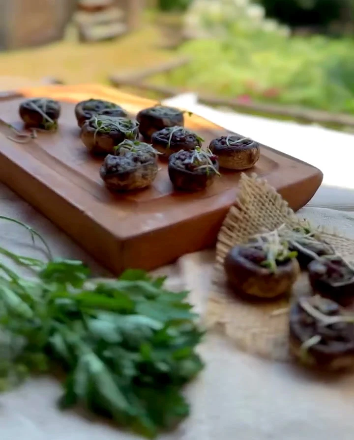
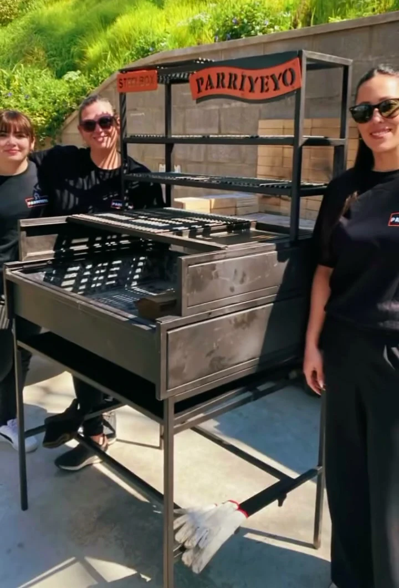

Malaya a la pizza
A LA PARRILLAQueso fundido, tomate y albahaca. Para ir por otro pedazo.

Tú pones el lugar.
Nosotros, el fuego, la comida
y todo para disfrutar.
Un vistazo a nuestra cocina
Cortes a la parrilla, bocados para conversar y preparaciones que se terminan frente a tus invitados.
Queso fundido, tomate y albahaca. Para ir por otro pedazo.
Pequeños bocados, carne y el detalle de nuestra cocina.
El clásico de la parrilla, en formato para compartir.
La carne al centro. El corte justo antes de servir.
Otra forma de reunir sabores alrededor del fuego.
Color, verduras y carne que llegan recién hechos.
Una muestra de nuestras preparaciones. El menú de tu evento lo armamos contigo.
Tu evento, con Parriyeyo
Que tu única tarea sea estar ahí.
Nos ocupamos de la cocina y la operación para que tú compartas con los tuyos.

Hay cosas que se disfrutan sin apuro.
La parrilla se prende. El aroma empieza a hacer lo suyo.
Cocinar, cortar, terminar. Ahí mismo, frente a ustedes.
El primer bocado abre la conversación. Del resto, nos encargamos nosotros.

El fuego tiene quien lo cuide
Diego Sandoval es Yeyo: el parrillero que está detrás de Parriyeyo. La cocina al fuego es su lugar.
Lo acompaña un equipo que se mueve entre la parrilla, el montaje y el servicio. Para que la comida llegue como debe y tú puedas seguir disfrutando.
Una celebración en casa, un encuentro del equipo o una fecha especial. Partamos por tu idea.
La próxima junta puede ser la tuya
Cuéntanos cuántos son, dónde se juntan y qué quieren celebrar. Con eso, empezamos a armar tu propuesta.

¿Prefieres conversar directamente?
Escríbenos en Instagram